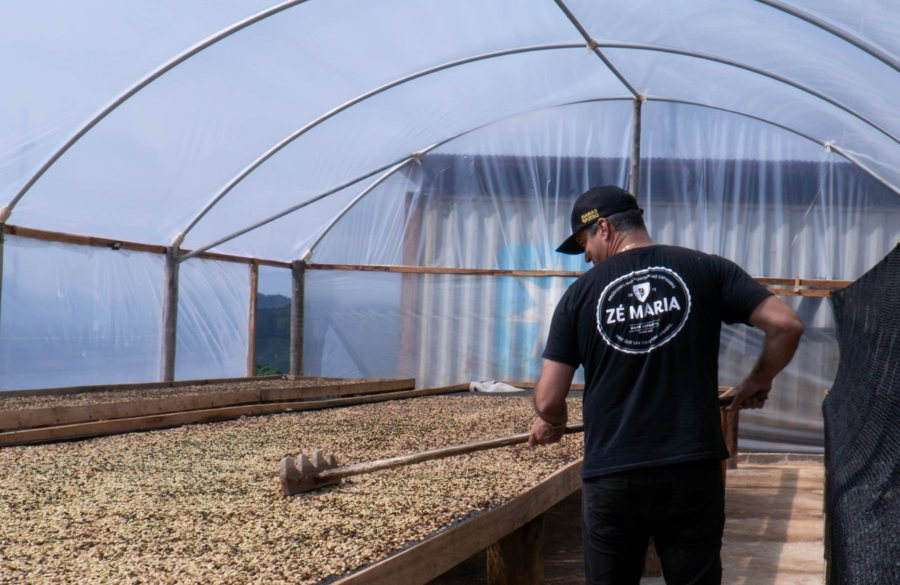

A história do Café Zé Maria
Cafés especiais da família Ovani, cultivados e colhidos à mão nas Montanhas Capixabas, em Itaguaçu (ES).
Cleberson Ovani conta a história
Uma família nas Montanhas Capixabas
Tudo começou em 1971. A família Ovani, que havia chegado da Itália décadas antes, escolheu as montanhas de Itaguaçu para criar raízes. Com o tempo, aprendeu a conhecer a terra e a cultivar o café pela observação e pela dedicação diária, passando esse cuidado de geração em geração.
Quem foi Zé Maria
José Maria Ovani era um pai dedicado, um trabalhador incansável e um apaixonado por café especial. O nome dele ficou em cada pacote. Hoje, o filho Cleberson Ovani conduz a fazenda com o mesmo zelo, em homenagem ao pai.
“Em memória do meu querido pai, José Maria Ovani!”— Cleberson Ovani
Na Fazenda José e Maria
As lavouras ficam a mais de mil metros de altitude, onde as noites são frias e o fruto amadurece mais devagar. A colheita é feita à mão, só com os frutos maduros. A torra fica com a Flor de Março, e cada lote é analisado por profissionais certificados, seguindo os padrões da SCA.